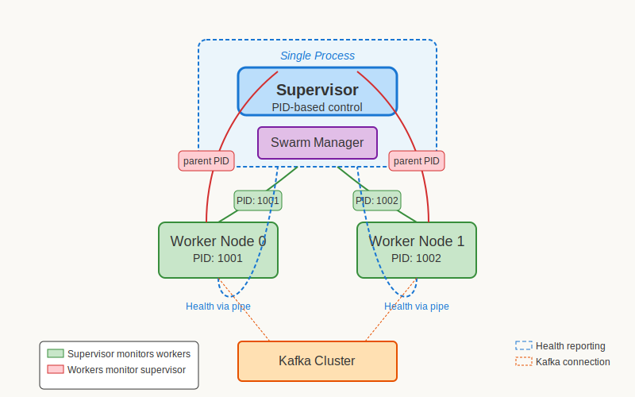
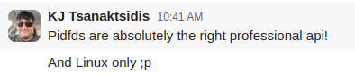
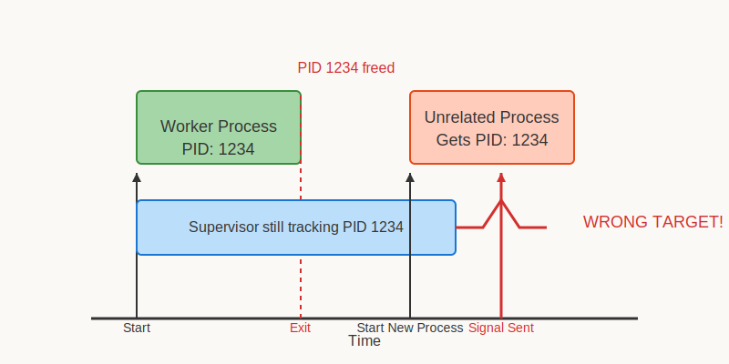
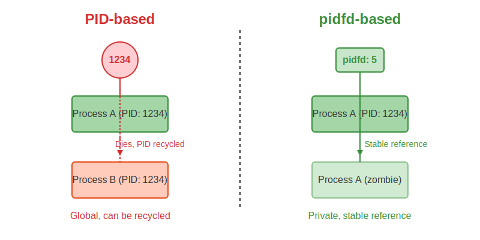

Bringing Linux pidfd to Ruby
RubyKaigi 2025
About Me
- Maciej Mensfeld
- Software Architect
- 17+ years in Ruby
Work @ Mend.io
Supply Chain Security & AI/LLM Security
Creator of Karafka
Ruby & Rails Kafka Processing Framework

Maintainer of Shoryuken
A efficient Amazon SQS processor for Ruby
(no logo yet, working on it)
RubyGems Security Team Member
Today's Journey
- Challenges
- Solutions
- Implementation
- Lessons & Future Directions
I Love RubyKaigi
But I'm Not Delusional
Use the right tools for the job...
...but also make Ruby the right tool to do more!
The Challenge
Karafka is multi-threaded
Ruby has a Global VM Lock (GVL)
✓ 80%
I/O-bound tasks
Perfect for threads
⚠️ 20%
CPU-intensive tasks
Limited by the GVL
The I/O-bound Myth
🤔 Users often misunderstand their CPU boundaries
Hidden CPU costs:
- Data deserialization (JSON, Avro)
- Content filtering
- Content searching
- Data transformation
"If these applications were really spending the overwhelming majority of their time waiting on I/O, it would be impossible for YJIT to perform this well overall."
— Jean Boussier (byroot)
Even in stream processing, I/O may be just a fraction of the total workload
The Goal
Add CPU-friendly Parallelization to Karafka and Shoryuken
CPU Parallelization Options
🧵 Ractors
- Built into Ruby 3+
- Actor-based concurrency
- Share-nothing design
- Message passing
- Experimental status
🔀 Processes (fork)
- Mature Unix feature
- Complete isolation
- True OS-level parallelism
- Higher memory overhead
- Production-proven
Both bypass the Global VL Lock for true parallel execution
Ractors: Current Reality
📉 JSON parsing benchmark (Bug #19288)
no Ractor:
1.742630 0.023948 1.766578 ( 1.770248)
Ractor
12.724407 1.142691 13.867098 ( 4.854311)
Ractors are ~3x slower for CPU-intensive operations
So... forks!
The Architecture
First Attempt
"Like any good Rubyist, I KISS..."
PID-Based Fork
def fork_workers(count = 4)
count.times do
pid = fork do
Karafka::Cli::Server.call
end
@worker_pids << pid
end
endPID-Based Signals
def stop_workers
@worker_pids.each do |pid|
Process.kill(:TERM, pid)
end
endPID-Based Wait
def wait_for_workers
@worker_pids.each do |pid|
Process.waitpid(pid)
end
endInitial Results
It worked!
(in development)
The Code Review
I showed my work to KJ Tsanaktsidis from the Ruby Core team...
KJ's Feedback
"Pidfds are absolutely the right professional API!"
My Reaction
🤔
The Problems
There were some flaws in my approach
Problem 1
PID Reuse
PID Reuse
- PIDs are just numbers
- Limited pool
- Recycled when processes terminate
PID Reuse Visualized
A Familiar Experience?
ps aux | grep ruby
user 12345 2.5 0.8 Sl 10:25 0:18 ruby app.rb
kill -9 12345
bash: kill: (12345) - No such process
The same race condition can affect Ruby code!
PID Reuse Impact
- Sending signals to wrong processes
- Incorrect monitoring results
- Potential security issues
PID Security Issues
- CVE-2019-6133: PID race allowed sandbox escape
- PID recycling enables privilege escalation attacks
- Mistakenly terminating critical system processes
Problem 2
Signal Race Conditions
The Execution Environment Challenge
Execution Environments
🏗️ Puma, Karafka, Shoryuken
- Manage process lifecycle
- Need global signal traps
- Control worker processes
Libraries Running Within
📚 User code, gems, libraries
- May fork their own processes
- Need reliable wait/signal
- No control over parent's traps
Signal handlers are global per-process - creating fundamental conflicts
Signal Races
- SIGCHLD sent when child exits
- Any code can set a SIGCHLD handler
- First handler to call waitpid wins
- Exit status can only be retrieved once
# Process level handler
Signal.trap(:CHLD) do
begin
pid, status = Process.waitpid2(-1, Process::WNOHANG)
if pid
puts "MAIN: Signal handler reaped child" \
" PID #{pid} (exit code: #{status.exitstatus})"
end
rescue Errno::ECHILD
# No children left to reap
end
end
# Library level handler
begin
waited_pid, status = Process.waitpid2(pid)
puts "LIBRARY: Successfully reaped PID #{waited_pid}"
return status
rescue Errno::ECHILD
puts "LIBRARY: ERROR - Child PID #{pid} was reaped"
return nil
end
Exit Code Races: Not Solved fully by pidfd
⚠️ Even with pidfd, exit code races remain:
- When a child process exits, its exit code can only be retrieved once
- The first code to call
waitpidorwaitid"wins" - Subsequent attempts receive
ECHILDerror
What pidfd CAN'T solve:
- Exit code retrieval races
- Signal trap conflicts
- SIGCHLD interception
What pidfd DOES solve:
- PID reuse issues
- Process state monitoring
- Race-free signal delivery
For complete process management, careful architectural design is still required!
Problem 3
Process Hierarchy Limitations
- SIGCHLD only sent to immediate parent
- No built-in tracking of process trees
- Orphaned processes reassigned to init (PID 1)
- No direct way to monitor non-child processes
PID-based Polling
# Poll every second
Thread.new do
loop do
begin
# Try sending signal 0 to check existence
Process.kill(0, pid)
puts "Process #{pid} is running"
rescue Errno::ESRCH
puts "Process #{pid} has exited"
break
end
sleep 1 # CPU waste, latency
end
end
PID usage in Ruby
- Puma, Unicorn, Sidekiq, Pitchfork already handle forking
- All use PID-based tracking
- io-event is the only Ruby lib using pidfd (so far)
pidfd to the rescue
- Process File Descriptor
- Added in Linux 5.3 (2019)
- Stable reference to a process
- Solves two out of our three problems
What is a File Descriptor?
Basics
- Integer handle to a system resource
- Core UNIX abstraction
- Referenced by number (e.g., 0, 1, 2)
- Managed by the kernel
Common FDs
- 0: Standard input (stdin)
- 1: Standard output (stdout)
- 2: Standard error (stderr)
- 3+: Files, sockets, pipes, etc.
In UNIX, "everything is a file"
file = File.open("example.txt")
puts file.fileno # Returns the file descriptor number
pidfd Benefits
- Stable Process Reference
- Immune to PID Reuse
- Pollable (select/poll/epoll)
- Race-Free Signal Delivery
PID vs pidfd
Core pidfd API
| Syscall | Purpose |
|---|---|
| pidfd_open(pid, flags) | Get a file descriptor for a process |
| pidfd_send_signal(pidfd, sig, info, flags) | Send signals via the file descriptor |
| waitid(P_PIDFD, ...) | Clean up terminated processes |
Works with standard file descriptor APIs (poll, select, epoll)
The Problem
Ruby has no pidfd support
Building the Bridge
How to use pidfd from Ruby?
Bringing pidfd to Ruby
Language Integration
- KJ' Feature #19322
- New Ruby APIs:
Process.spawn_handleProcess::Handleclass
- Native speed & safety
- Integrated with Ruby VM
- Requires C-level changes
FFI Approach
- Direct syscall bindings
- Works with existing Ruby
- No Core changes needed
- Available now
- Limited by FFI overhead
- What I used in Karafka
"Pidfds are absolutely the right professional API!"
— KJ Tsanaktsidis, Ruby Core contributor
Foreign Function Interface
- Ruby's FFI lets us call C functions
- We can use it to access Linux syscalls
- Requires mapping syscall numbers
- Needs platform detection code
FFI Implementation
class Pidfd
extend FFI::Library
begin
ffi_lib FFI::Library::LIBC
attach_function :fdpid_open, :syscall,
%i[long int uint], :int
attach_function :fdpid_signal, :syscall,
%i[long int int pointer uint], :int
attach_function :waitid,
%i[int int pointer uint], :int
# Syscall numbers (Linux x86_64)
PIDFD_OPEN = 434
PIDFD_SEND_SIGNAL = 424
API_SUPPORTED = true
rescue LoadError
API_SUPPORTED = false
end
endPlatform Detection
def self.supported?
# If FFI failed to load
return false unless API_SUPPORTED
# Won't work on macOS or Windows
return false if RUBY_DESCRIPTION.include?('darwin')
return false if RUBY_DESCRIPTION.match?(/mswin|ming|cygwin/)
# Not all OSes may support this (BSD)
new(::Process.pid)
true
rescue Errors::PidfdOpenFailedError
false
endPidfd Initialization
def initialize(pid)
@mutex = Mutex.new
@pid = pid
# Call syscall to get pidfd
@pidfd = open(pid)
# Wrap as Ruby IO for polling
@pidfd_io = IO.new(@pidfd)
end
private
def open(pid)
pidfd = fdpid_open(
pidfd_open_syscall,
pid,
0
)
return pidfd if pidfd != -1
raise Errors::PidfdOpenFailedError, pidfd
endProcess Status Check
def alive?
@pidfd_select ||= [@pidfd_io]
@mutex.synchronize do
return false if @cleaned
# pidfd becomes readable when process terminates
# nil means not readable = still alive
IO.select(@pidfd_select, nil, nil, 0).nil?
end
endSignal Delivery
def signal(sig_name)
@mutex.synchronize do
return false if @cleaned
# Never signal dead processes
return false unless alive?
result = fdpid_signal(
pidfd_signal_syscall,
@pidfd,
Signal.list.fetch(sig_name),
nil,
0
)
return true if result.zero?
raise Errors::PidfdSignalFailedError, result
end
endZombie Process Cleanup
def cleanup
@mutex.synchronize do
return if @cleaned
# Reap the process
begin
waitid(P_PIDFD, @pidfd, nil, WEXITED)
rescue Errno::ECHILD
# Ignore
# should not happen unless traps overwritten
end
# Clean up resources
@pidfd_io.close
@pidfd_select = nil
@pidfd_io = nil
@pidfd = nil
@cleaned = true
end
endPidfd API Capabilities
karafka/swarm/pidfd.rb
Core Capabilities
- Create stable references to processes
- Check if processes are alive
- Send signals reliably
- Clean up zombie processes
- Cross-platform detection
Advanced Features
- Thread-safe operation
- Bidirectional monitoring
- Non-direct child monitoring
- Non-blocking status checks
- Race-free process management
pidfd.alive? # Check process state
pidfd.signal() # Send signals safely
pidfd.cleanup() # Prevent zombie processesState Machine Management
def control
@nodes.each do |node|
if node.alive?
next if terminate_if_hanging(node)
next if stop_if_not_healthy(node)
next if stop_if_not_responding(node)
else
next if cleanup_one(node)
next if restart_after_timeout(node)
end
end
endOrphan Detection Code
def on_statistics_emitted(_event)
periodically do
Kernel.exit!(orphaned_exit_code) if node.orphaned?
node.healthy
end
endNo orphaned processes if supervisor crashes
Orphan Check Implementation
def orphaned?
# Check if supervisor is still alive
!@parent_pidfd.alive?
endEach worker tracks its parent with pidfd
Limitations
- Linux 5.3+ only
- Not available on macOS or Windows
- Requires FFI and syscall mapping
- Limited to processes in same PID namespace
- No built-in process group operations
- Can't access descendants automatically
When to Use pidfd
In most cases, pidfd is overkill — even in Karafka
✅ Where pidfd Truly Shines
- Libraries running in environments you don't control
- Monitoring non-direct child processes
- Environments with competing signal handlers
- Applications with security concerns around PID reuse
- Systems with high process churn
⚠️ Standard Approach is Usually Fine
- Most parent-child process management
- Applications with full control over process lifecycle
- Systems with moderate fork/exec rates
- Applications needing cross-platform compatibility
- Most regular Ruby applications
Lessons Learned
- There are so many cool low-level OS features
- Process management is much harder than it appears
- Ruby core team members are amazing!
- Stable process references are safer than PIDs
pidfd is a solution for specific edge cases, not a general replacement for PIDs
Future Directions
Immediate Plans
- Standalone gem for pidfd support
- Better fallbacks for non-Linux platforms
Real-time Signals
- Extend to support real-time signals (SIGRTMIN+n) via sigqueue
- Add access to siginfo_t data from signals
- Enable signal payloads for richer IPC
Thank You
Questions?